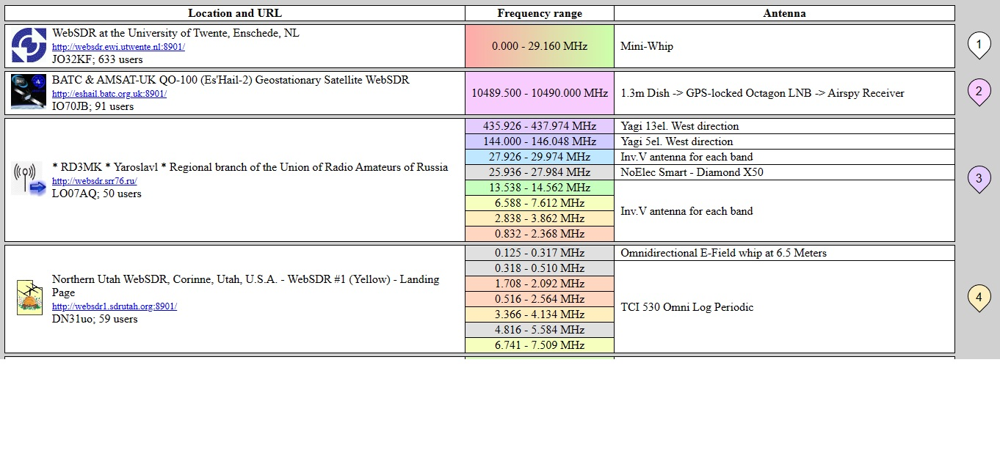
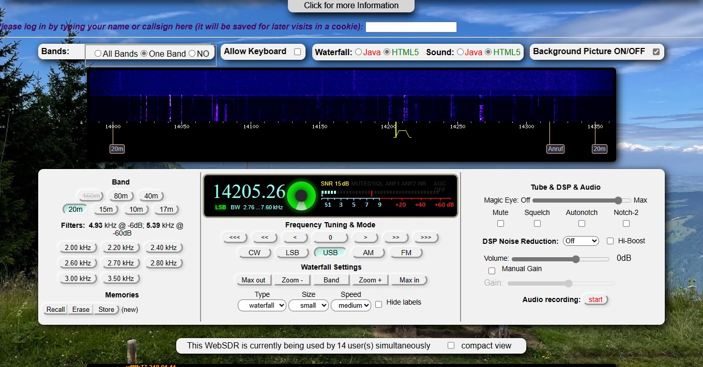

People around the world have set up their radio receivers (and antenna) to be accessible over the Internet.
The upshot of this means that you can control of other people’s receivers around the world, and listen to the frequencies that they can receive.
WebSDRs Support multiple connections,
This allows a number of people access the receiver, tuning to their preferred frequency,
whilst others are listening to different frequencies.
Where are these receivers?
There are active receivers around the world, Some of them are provided by radio enthusists, there are several locatated at famous listening stations. Jodrell Bank in Cheshire,
Goonhilly Earth Station in Cornwall.
Benefits for Scouts
Activity badge requirements.
Scouts Are required to log a number of Amateur Radio Transmissions.
They can gain experience with tuning a receiver.
Most modern Radio receivers come with a waterfall display Websdr teaches them how to use the disply.
Decipher some of the various tranmission modes using other software applications.
Allows them to do all this from their own home using a computer or tablet.
There is no outlay for receivers or antennas.
A list of active receivers can be found on the websdr website at Websdr there are over 100 stations in the List.
The page shows the receivers geographical location, The available frequencies / bands covered, The antennas being used.
In the UK, probably the most well-known is the “Hack Green SDR”. This is at the site of a decommissioned ex-cold war nuclear bunker in Nantwich, Cheshire. Click the following link: hackgreensdr.org:8901
As shown in the image 
Once you locate a station that covers the band you interested in. Click the link that is displayed in the Location Field.
Clicking the link will display the Receivers home page.
